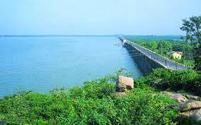
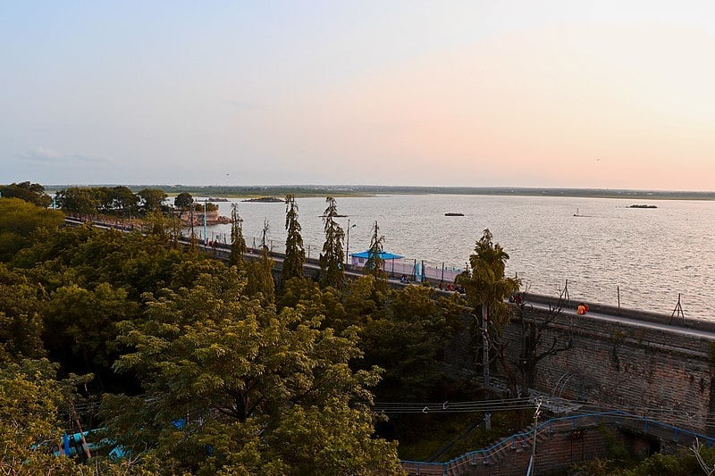

OSMAN SAGAR LAKE

It is a popular tourist destination, especially in monsoon season when the reservoir is full. Its parks, resorts, and amusement park are a major attraction. This lake had served drinking water to Hyderabad city but, due to increase in population, is not sufficient to meet the city's water supply demand.[2]
Himayat Ali Mirza, great-grandson of Nizam VII has recently joined the “save Osmansagar and Himayatsagar” campaign for saving the twin reservoirs and has also urged the of Telangana CM to scrap the orders of GO 111.[3][4][5]
Himayat said that now that the government had withdrawn the GO 111, the floods might affect various parts of the city. Scrapping of GO 111 has led to increasing the construction and concretisation activities near the lakes, ultimately resulting in consequent flooding.

How to reach:

By Air
The nearest airport is in hyderabad

By Train
The nearest railways is in hyderabad

By Road
Osmansagar is a famous tourist destination in Hyderabad, can be used as a landmark. A bus,cab,local rickshaw can also be taken to reach the capital.